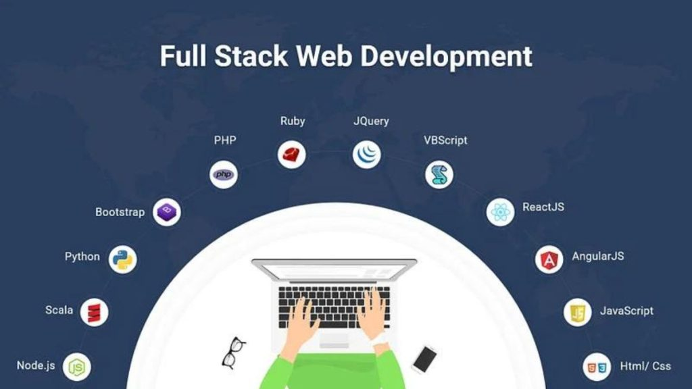
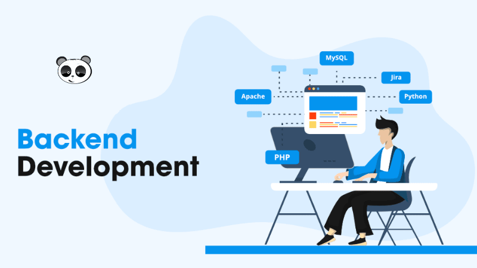

FULLSTACK

Full-Stack web developer adalah pengembang atau insinyur web yang bekerja di front-end dan back-end situs web atau aplikasi — artinya mereka dapat menangani proyek yang melibatkan basis data, membangun situs web yang menghadap pengguna, atau bahkan bekerja dengan klien selama tahap perencanaan proyek. Tugasnya mengembangkan aplikasi dan membuat aplikasi mudah serta nyaman digunakan. Lulusan informatika atau ilmu komputer tentu sangat familiar dengan profesi ini. Full stack developer adalah developer yang bekerja di dua sisi yaitu server side dan client side dari sebuah situs atau aplikasi.J
FRONTEND

frontend mengacu pada antarmuka pengguna grafis (GUI) yang dapat berinteraksi langsung dengan pengguna Anda, seperti menu navigasi, elemen desain, tombol, gambar, dan grafik. Secara teknis, halaman atau layar yang dilihat pengguna Anda dengan beberapa komponen UI disebut model objek dokumen (DOM). Front end developer bertanggung jawab mengimplementasikan desain dan konsep yang ada di web. Implementasi tersebut bisa dicapai menggunakan beberapa bahasa. Bahasa pemrograman yang digunakan untuk bagian front end developer adalah HTML, CSS, dan JavaScript.
BACKEND

Apa itu Bahasa Backend? Bahasa backend adalah bahasa yang digunakan Developer untuk memprogram sistem internal yang beroperasi di latar belakang aplikasi web apa pun. Bahasa pemrograman backend memiliki fitur khusus yang memudahkan proses komunikasi dengan server informasi.